Test Report: Advanced Page Search
Summary
| Property |
Value |
| Extension |
Evoq.PersonaBar.Pages |
| Feature |
Advanced Page Search |
| Description |
Search pages with multiple filters including page type, tags, publish status, date range, and workflow |
| Priority |
High |
| UI Location |
Admin > Content > Pages > Search |
| Test Date |
January 6, 2026 |
| Total Tests |
8 |
| Passed |
8 |
| Failed |
0 |
Relevant Code Files:
- Services/EvoqPagesController.cs - Contains SearchPages API endpoint
- Components/EvoqPagesControllerImpl.cs - Page controller implementation
Test 1: Search by Page Type
PASS
Description
Test filtering pages by page type (Standard, URL, etc.)
Steps
- Navigate to Pages panel and click search icon
- Expand Advanced Filters
- Open Page Type dropdown
- Select "Standard" page type and apply
- Verify results show only Standard pages
- Select "URL" page type and apply
- Verify results show only URL pages (or empty if none exist)
Results
PASS - Page type filter works correctly:
- Standard filter: 50 pages found
- URL filter: 0 pages found (no URL pages exist)
Screenshots
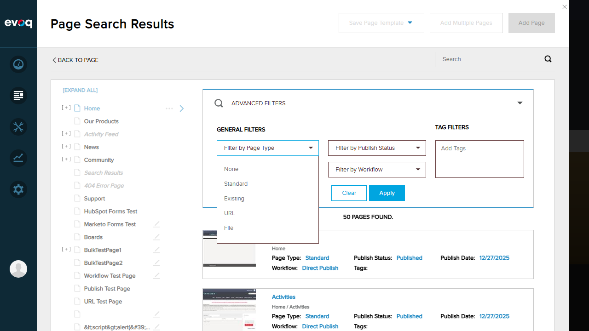
Page Type dropdown showing filter options
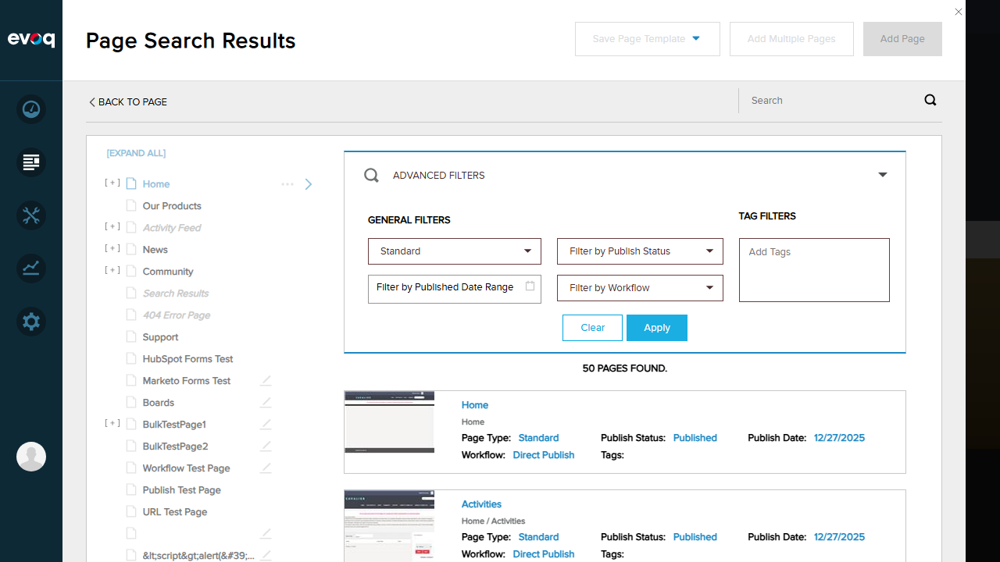
Standard page type filter applied - 50 pages found
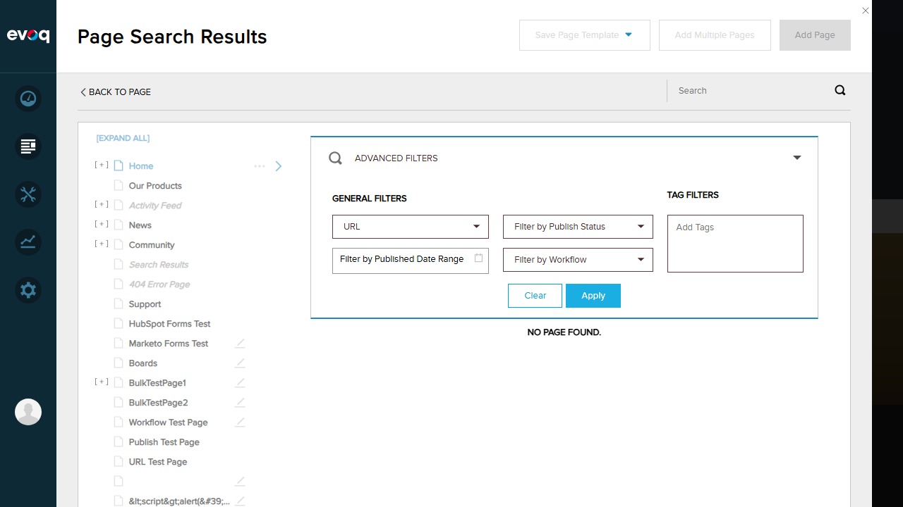
URL page type filter - No pages found
Test 2: Filter by Publish Status
PASS
Description
Test filtering pages by publish status (All, Published, Draft)
Steps
- Open Advanced Filters
- Open Publish Status dropdown
- Select "Draft" status and apply
- Verify results show only draft pages
Results
PASS - Publish status filter works correctly:
- Draft filter: 17 pages found (down from 50 total)
- All filtered pages show "Publish Status: Draft"
Screenshots
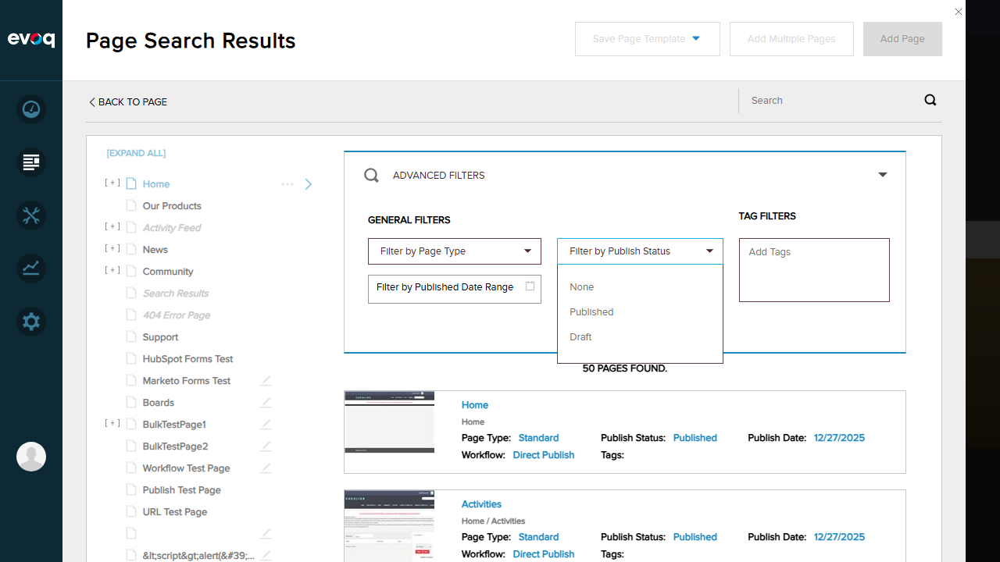
Publish Status dropdown showing options: None, Published, Draft
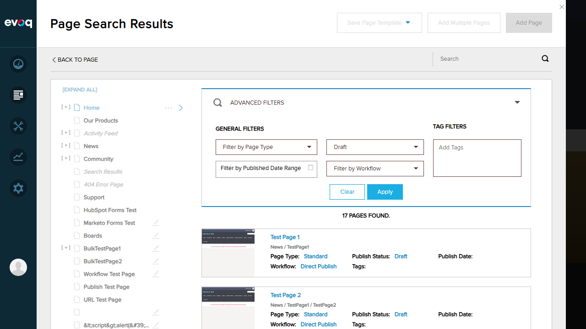
Draft filter applied - 17 pages found
Test 3: Filter by Date Range
PASS
Description
Test filtering pages by published date range
Steps
- Open Advanced Filters
- Click on Date Range picker
- Select date range (12/27/2025 - 01/06/2026)
- Apply filter and verify results
Results
PASS - Date range filter works correctly:
- Date range 12/27/2025 - 01/06/2026: 33 pages found
- All filtered pages have publish dates within the selected range
Screenshots
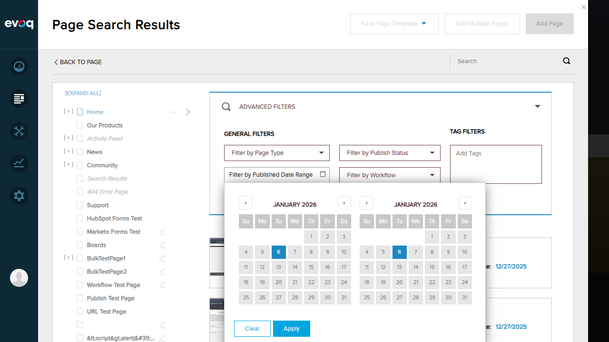
Date range picker with calendar interface
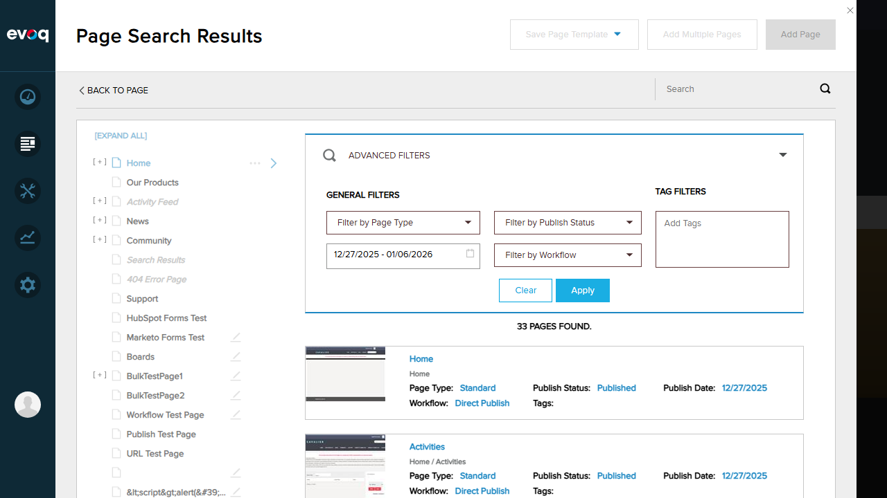
Date range filter applied - 33 pages found
Test 4: Filter by Workflow ID
PASS
Description
Test filtering pages by workflow assignment
Steps
- Open Advanced Filters
- Open Workflow dropdown
- Select "Content Approval" workflow
- Apply filter and verify results
Results
PASS - Workflow filter works correctly:
- Available workflows: None, Direct Publish, Save Draft, Content Approval, Test Approval Workflow, QA Test Workflow
- Content Approval filter: 2 pages found
- Both pages show "Workflow: Content Approval"
Screenshots
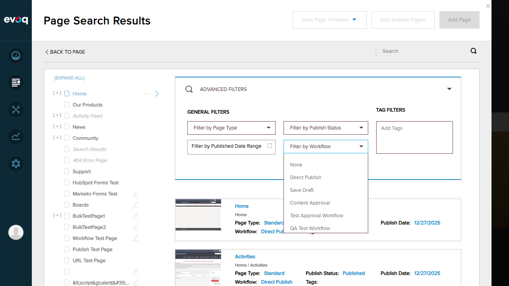
Workflow dropdown showing all available workflows
Content Approval workflow filter applied - 2 pages found
Test 5: Filter by Tags
PASS
Description
Test filtering pages by tags
Steps
- Open Advanced Filters
- Click on Tags input field
- Enter tag name "test"
- Apply filter and verify results
Results
PASS - Tags filter works correctly:
- Tag "test" entered as filter chip
- Result: "NO PAGE FOUND" (no pages have this tag)
- Filter UI properly displays entered tags with remove option
Screenshots
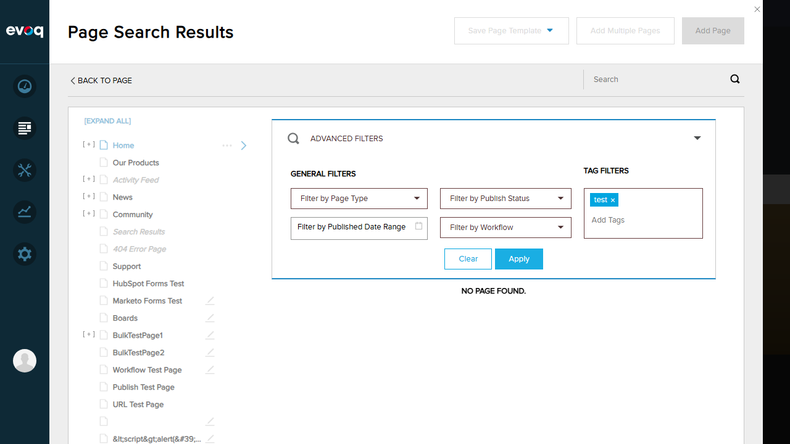
Tags filter with "test" tag applied - No pages found
Test 6: Combined Filters
PASS
Description
Test applying multiple filters simultaneously
Steps
- Open Advanced Filters
- Select Publish Status: "Draft"
- Select Workflow: "Content Approval"
- Apply combined filters
- Verify results match both criteria
Results
PASS - Combined filters work correctly:
- Filters applied: Draft + Content Approval
- Result: 2 pages found
- Both pages show: Publish Status = Draft AND Workflow = Content Approval
- Confirms filters work with AND logic
Screenshots
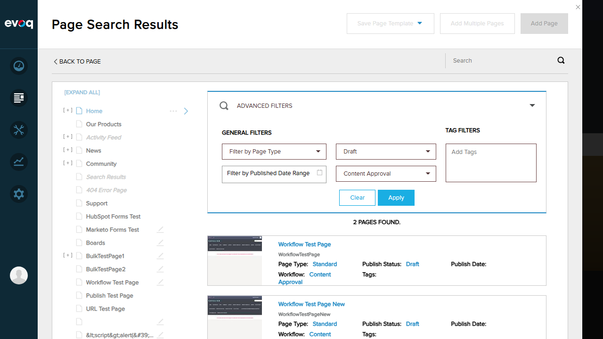
Combined filters (Draft + Content Approval) - 2 pages found
Test 7: Pagination in Search Results
PASS
Description
Verify pagination functionality when viewing large result sets
Steps
- Clear all filters to show all pages
- Verify total page count (54 pages)
- Scroll through the results list
- Verify all pages are accessible
Results
PASS - Pagination/scrolling works correctly:
- Total pages found: 54
- UI uses scrollable list design (not traditional page numbers)
- All 54 pages are accessible via scrolling
- Results load smoothly without performance issues
Screenshots
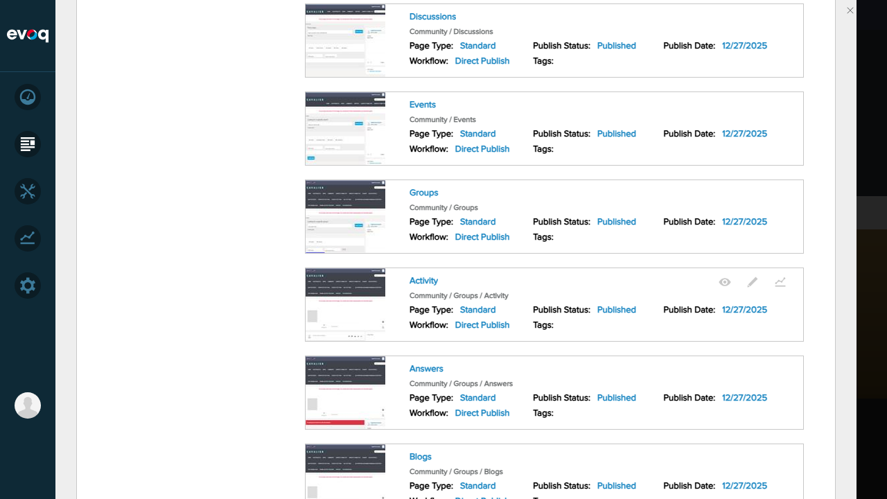
Scrollable results list showing multiple pages (54 total)
Test 8: Empty Search Results
PASS
Description
Verify proper handling when no pages match filter criteria
Steps
- Apply filter that returns no results (e.g., Tags: "test" or Page Type: "URL")
- Verify empty state is displayed properly
Results
PASS - Empty results handled correctly:
- Tags filter "test": Shows "NO PAGE FOUND."
- Page Type "URL": Shows "NO PAGE FOUND."
- Clear, user-friendly message displayed
- Filters remain visible for modification
Screenshots
Empty results when filtering by URL page type
Empty results when filtering by "test" tag
Observations
- API Support: The SearchPages API (EvoqPagesController.cs:97-110) supports all filter parameters: searchKey, pageType, tags, publishStatus, publishDateStart, publishDateEnd, workflowId, pageIndex, pageSize
- Pagination Implementation: The UI implements scrollable list pagination rather than traditional page number controls. The API supports pageIndex/pageSize parameters for server-side pagination.
- Template Page Type: The "template" page type mentioned in test scenarios is not visible in the UI dropdown (options: Standard, Existing, URL, File). Template pages may be filtered separately or handled differently in the backend.
- Tags Feature: The tags filter UI works correctly, but no pages in the test environment had tags assigned, resulting in empty results when testing tag filtering.
Test Environment
| Property |
Value |
| Website URL |
http://localhost:8081 |
| Test Account |
host (SuperUser) |
| Browser |
Playwright (Chromium) |
| Viewport |
1280 x 720 |